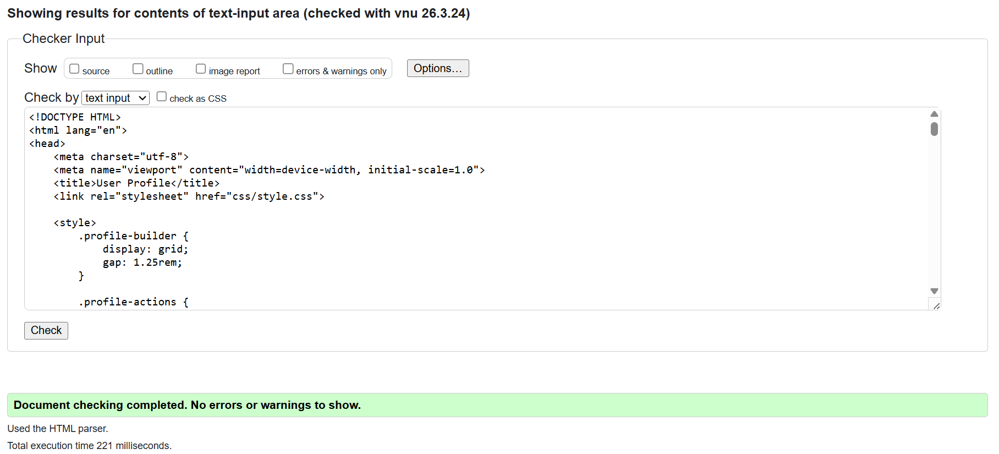
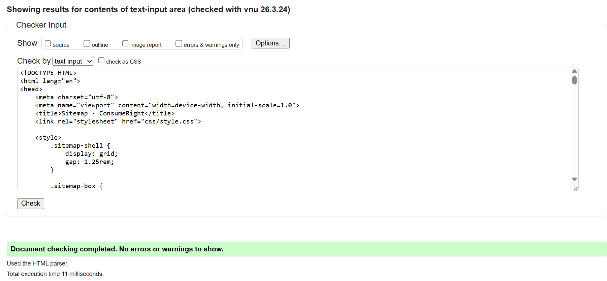
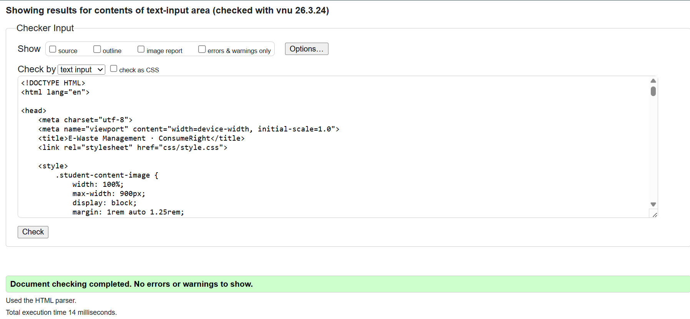

HTML validation evidence — Aamina Rifas
This page provides validation evidence for the pages I personally implemented as Student 4. It includes my User Profile page, Sitemap page, and Content page. The Page Editor and the Validation page itself are not included, in line with the coursework requirement.
Validator used: W3C Markup Validation Service - https://validator.w3.org/
profile.html

Result: 0 errors. If warnings were shown, they were reviewed and did not prevent successful validation.
sitemap.html

Result: 0 errors. The SVG sitemap structure was checked carefully to ensure the page remained standards-compliant.
content_ST4.html

Result: 0 errors. Internal links, heading structure, images, and long-page content layout were checked during validation.
Reflection on the validation process
The validation process helped me identify and correct small HTML issues such as minor structural mistakes, missing attributes, and formatting errors that were easy to overlook while focusing mainly on design and functionality.
Revalidating each page after making corrections showed me that a page can appear correct in the browser while still containing technical problems in the code. This reinforced the importance of checking standards compliance instead of relying only on visual appearance.
Overall, validation improved the quality and reliability of my pages and helped me develop better habits for writing cleaner and more accurate HTML.